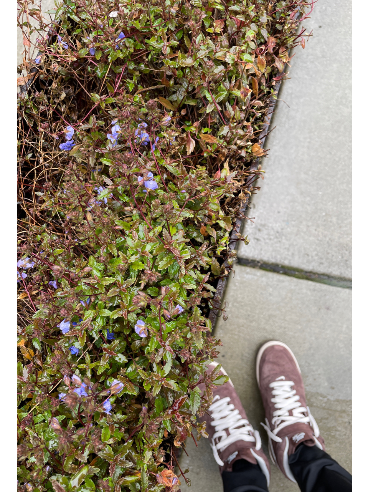

This is the original picture that inspired my color palette:
I am using a complementary color scheme because light purple and light green complement each other. The emotion I am trying to elicit from the webpage viewer is feeling mystical, independent, and creative.